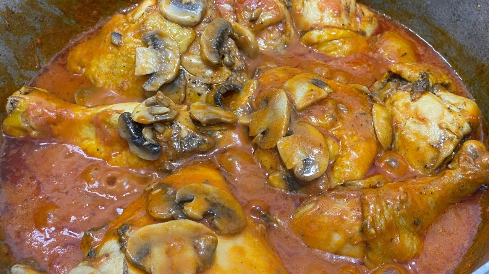

Mushroom Chicken

This absolutely Succulent dish consists of chicken cooked in a savory mushroom/tomato sauce. It's fairly easy to make and the ingredients can be found at most grocery stores.
The type of mushroom we'll be using for this recipe is the white/common mushroom.
Mushroomy chicken looks fancy enough for a family dinner!
This recipe was taken and translated from Rosita Cocina's YouTube channel.
Ingredients
- 1 cup tomato paste
- 1/2 cup white wine
- 2 cups common mushroom
- 2 tbsp butter
- 2 tbsp all-purpose flour
- 1 bay leaf
- 1 cup chicken stock
- 6 tbsp oil
- 1 previously marinated chicken, separated into pieces
Steps
- Marinate your chicken. Marinating it for about three hours should be enough, but for Maximum Flavor, you can leave it marinating overnight.
- Pour the oil in a deep skillet and brown the chicken. Closing it with a lid will help brown the chicken faster.
- Make sure to brown all sides. Check the chicken periodically.
- Heat the butter in a pan, and once it's melted, fry the mushrooms for 3-5 minutes. They will shrink a little, so you'll have to be careful with the timing.
- Mix the tomato paste, the wine, the chicken stock and the flour in a bowl, with the help of a whisk. Make sure there are no lumps left.
- Pour the mixture over the chicken and add the bay leaf for extra flavor. Let it cook until the sauce boils.
- Add the mushrooms and mix everything evenly.
- Serve and enjoy!!
Back to main page